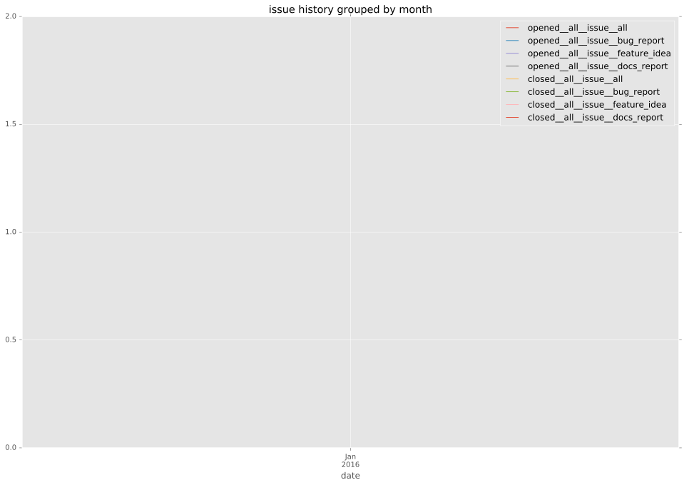
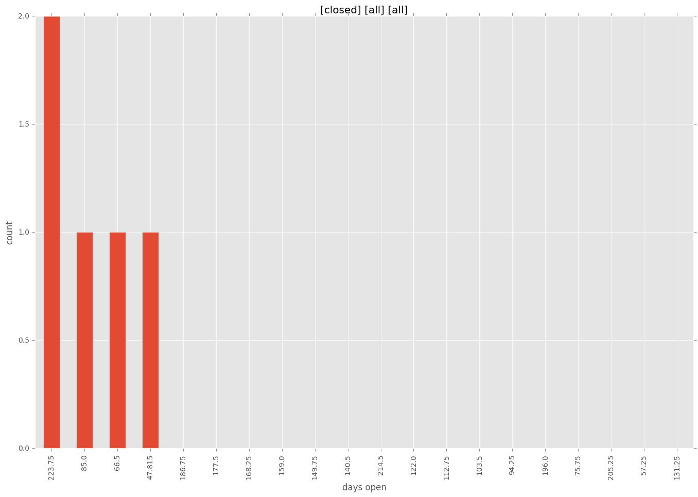
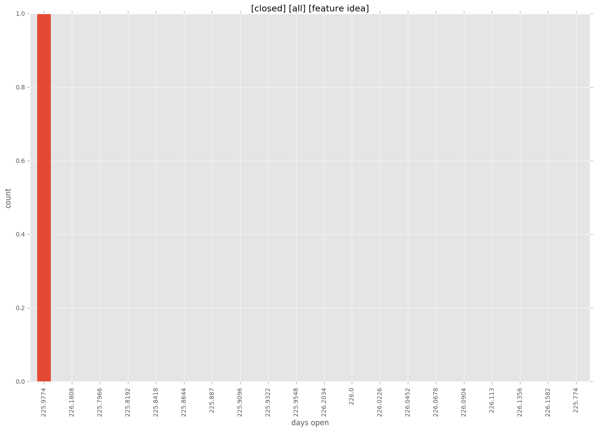
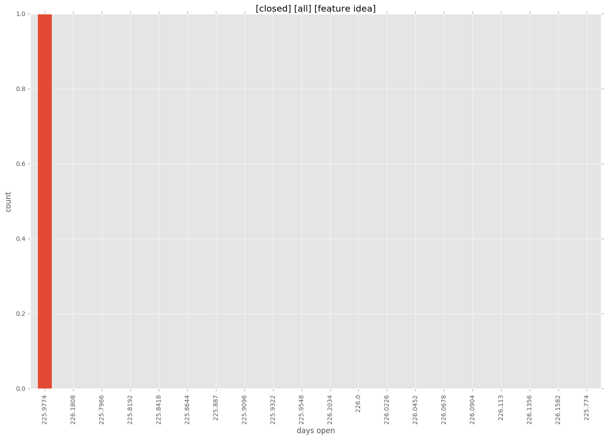
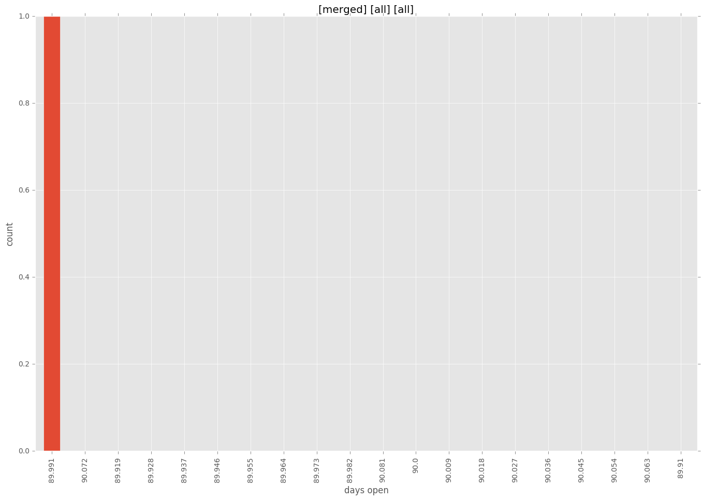
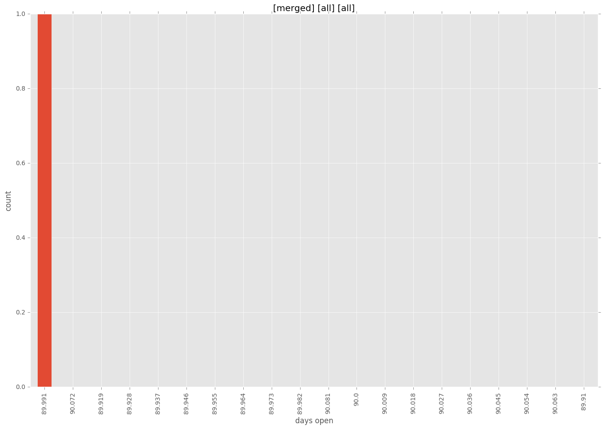

total issue counts
feature idea: 1
pullrequest: 3
issue: 2
new plugin: 3
bug report: 1
issue history

days open by issue type
all
count: 6
std: 81.98211187
min: 48
max: 233
median: 90.0
mean: 125.666666667
pullrequest
count: 0
std: nan
min: nan
max: nan
median: nan
mean: nan
feature idea
count: 1
std: nan
min: 226
max: 226
median: 226.0
mean: 226.0
issue
count: 0
std: nan
min: nan
max: nan
median: nan
mean: nan
new plugin
count: 4
std: 20.3039405042
min: 48
max: 90
median: 78.5
mean: 73.75
bug report
count: 1
std: nan
min: 233
max: 233
median: 233.0
mean: 233.0
closures grouped by total days open

 

 
